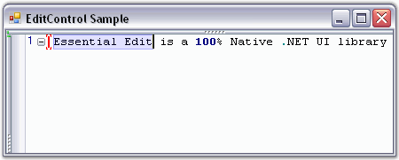
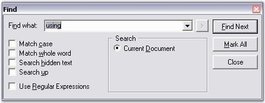
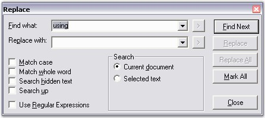
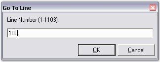

The Edit Control supports text search and replace functionalities through the use of the FindText and ReplaceText methods. There are also other useful methods like FindCurrentText, FindNext and ReplaceAll that assist in this purpose.
|
Edit Control Method |
Description |
|
FindText |
Finds the first occurrence of the specified text as per the conditions specified like match case, match whole word, search hidden text and search up. |
|
FindRange |
Searches for given string in the text of control and returns text range of first found occurrence. |
|
FindRegex |
Looks for specified expression in text. |
|
ReplaceText |
Replaces the first occurrence of the specified text with the replacement text as per the conditions specified like match case, match whole word, search hidden text and search up. |
|
FindCurrentText |
Finds the next occurrence of the word on which the cursor is presently on. |
|
FindNext |
Finds the next occurrence of the current search text. |
|
ReplaceAll |
Replaces all occurrences of the search text with the replacement text as per the conditions specified like match case, match whole word, search hidden text and search up. |
|
[C#]
// Finds the first occurrence of the specified text as per the conditions specified. this.editControl1.FindText("Essential Edit", true, true, true, true, null);
// Searches for given string in the text of control and returns text range of first found occurrence. this.editControl1.FindRange(searchString, startLocation, endLocation, matchWholeWord, searchHiddenText, searchUp, useRegex);
// Looks for specified expression in text. this.editControl1.FindRegex(startLine, startColumn, expression, bSearchInCollapsed, searchUp);
// Replaces the first occurrence of the specified text with the replacement text as per the conditions specified. this.editControl1.ReplaceText("ShowVerticalScrollbar", "ShowVerticalScroller");
// Finds the next occurrence of the word on which the cursor is presently on. this.editControl1.FindCurrentText();
// Finds the next occurrence of the current search text. this.editControl1.FindNext();
// Replaces all occurrences of the search text with the replacement text as per the conditions specified. this.editControl1.ReplaceAll(" Drag-and-drop", "Drag and drop"); |
|
[VB.NET]
' Finds the first occurrence of the specified text as per the conditions specified. Me.editControl1.FindText("Essential Edit", True, True, True, True, Nothing)
' Searches for given string in the text of control and returns text range of first found occurrence. Me.editControl1.FindRange(searchString, startLocation, endLocation, matchWholeWord, searchHiddenText, searchUp, useRegex)
' Looks for specified expression in text. Me.editControl1.FindRegex(startLine, startColumn, expression, bSearchInCollapsed, searchUp)
' Replaces the first occurrence of the specified text with the replacement text as per the conditions specified. Me.editControl1.ReplaceText("ShowVerticalScrollbar", "ShowVerticalScroller")
' Finds the next occurrence of the word on which the cursor is presently on. Me.editControl1.FindCurrentText()
' Finds the next occurrence of the current search text. Me.editControl1.FindNext()
' Replaces all occurrences of the search text with the replacement text as per the conditions specified. Me.editControl1.ReplaceAll(" Drag-and-drop", "Drag and drop") |

Figure 46: "FindText" method
Find and Replace Dialog Boxes
Edit Control also supports advanced and customizable Find and Replace dialog boxes. The Find dialog box is invoked by using the ShowFindDialog method. The keyboard shortcut to this dialog box is Ctrl+F.

Figure 47: Find Dialog Box
The Replace dialog box is invoked by using the ShowReplaceDialog method. The keyboard shortcut to this dialog box is Ctrl+H. The Replace dialog box also allows you to find and replace words within the selected text.

Figure 48: Replace Dialog Box
|
[C#]
// Invoke the Find Dialog. this.editControl1.ShowFindDialog();
// Invoke the Replace Dialog. this.editControl1.ShowReplaceDialog(); |
|
[VB.NET]
' Invoke the Find Dialog. Me.editControl1.ShowFindDialog()
' Invoke the Replace Dialog. Me.editControl1.ShowReplaceDialog() |
Positioning Mouse Cursor on a Specified line
The Edit Control supports the "GoTo" functionality both through the use of a run time dialog box and through programmatic APIs. The GoTo method is used to position the mouse pointer on any specified line. The GoTo method not only positions the pointer on the appropriate line, but it also scrolls the concerned line into the view. The linesAbove argument can be used to specify the number of lines to be displayed above the pointer.
|
[C#]
// Places the cursor at the beginning of the given line number. this.editControl1.GoTo(lineNumber); this.editControl1.GoTo(lineNumber, linesAbove); |
|
[VB.NET]
' Places the cursor at the beginning of the given line number. Me.editControl1.GoTo(lineNumber) Me.editControl1.GoTo(lineNumber, linesAbove); |
The CurrentLine property explained in the Positions and Offsets section, also does the same task as the GoTo method. The Goto dialog box is invoked using the ShowGoToDialog method. The keyboard shortcut to this dialog box is Ctrl+G.
|
[C#]
// Invoke the GoTo Dialog. this.editControl1.ShowGoToDialog(); |
|
[VB.NET]
' Invoke the GoTo Dialog. Me.editControl1.ShowGoToDialog() |

Figure 49: GoTo Dialog Box
Default key bindings to these dialogs can be changed as explained in the Keystroke - Action Combinations Binding topic.
History Properties
The FindHistory property is used to add/remove items from the find history in the Find dialog box. The ReplaceHistory property is used to add/remove items from the replace history in the Replace dialog box. Similarly, the ReplaceSearchHistory property is used to add / remove items from the find history in the Replace dialog box.
|
Edit Control Property |
Description |
|
FindHistory |
Gets history of Find dialog. |
|
ReplaceHistory |
Gets history of Replace dialog. |
|
ReplaceSearchHistory |
Gets search history of Replace dialog. |
The methods associated with the FindHistory property are used to perform the following operations.
|
FindHistory Method |
Description |
|
Insert |
Inserts an element into the System.Collections.ArrayList at the specified index. |
|
Remove |
Removes an element or the first occurrence from the System.Collections.ArrayList of the specified index. |
|
Sort |
Sorts all the elements in the System.Collections.ArrayList. |
|
Clear |
Clears all the items in the FindHistory. |
|
[C#]
this.editControl1.FindHistory.Insert(0,(object)ATH.addedItem); this.editControl1.FindHistory.Remove(o); this.editControl1.FindHistory.Sort(); this.editControl1.FindHistory.Clear(); |
|
[VB.NET]
Me.editControl1.FindHistory.Insert(0,CType(ATH.addedItem, Object)) Me.editControl1.FindHistory.Remove(o) Me.editControl1.FindHistory.Sort() Me.editControl1.FindHistory.Clear() |
 Note: The above methods can also be set for the
ReplaceHistory and ReplaceSearchHistory properties.
Note: The above methods can also be set for the
ReplaceHistory and ReplaceSearchHistory properties.
A sample which demonstrates the above features is available in the below sample installation path.
..\My Documents\Syncfusion\EssentialStudio\Version Number\Windows\Edit.Windows\Samples\2.0\Advanced Editor Functions\FindReplaceDemo